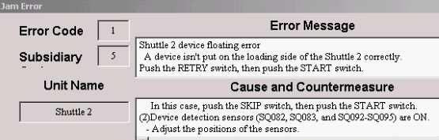
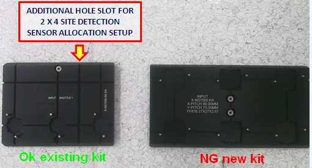
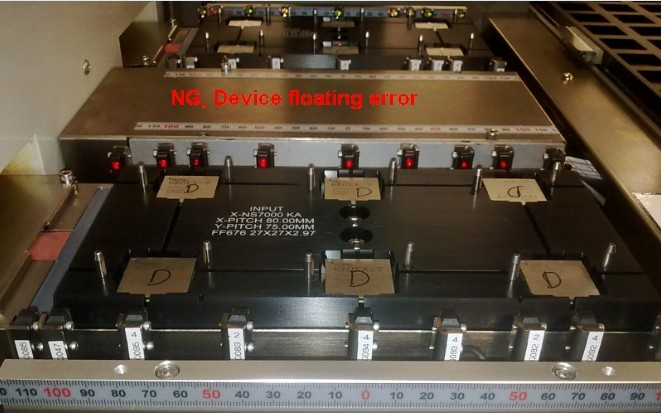
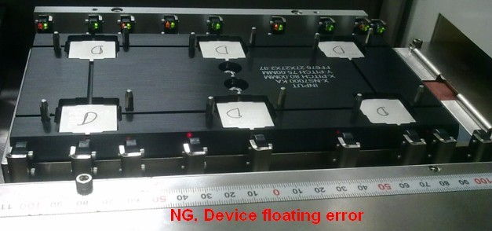

Service History
Subject: NS-7080W 6 Sites Socket Layout Kit, FF676 (27 x 27) Hex-Sites Change kit Input Shuttle sensor detection error
Handler Model: NS-7080W
Controller: RC520
Date: 31 Jan 2013
Symptom
NS-7080 6 Sites Socket Layout Kit, FF676 (27 x 27) Hex-Sites Changekit.
Input shuttle detection sensor as per your advice and still encountered errors as attached.
We found that there are some differences to the input shuttle for 1 X 3 site (additional hole slot to allocate the same sensor setup for 2 X 4 site) whereas the 3 X 2 site does cater for it.
Please kindly check with EPSON do we have to cater for this slot on the input shuttle for the 3 X 2 site setup?
Some additional information on the different site package are as follows:
1 X 3 Site
1) Package FG256 17 X 17
2) Pitch X60, Y60
3 X 2 Site
1) Package FF676 27 X 27
2) Pitch X80, Y75




Action
Cause
New change kit did not cut additional slot for Shuttle change kit, causing sensor detection error and device floating error.
Remarks
For input shuttle for 1 X 3 sites or 3x2 sites there is additional hole slot to allocate the same sensor setup for 4x2 sites.
MMI using the same Input Device Floating sensors for 4x2 sites on 1x3 or 3x2 sites, so additional slot on the Shuttle jig is required.